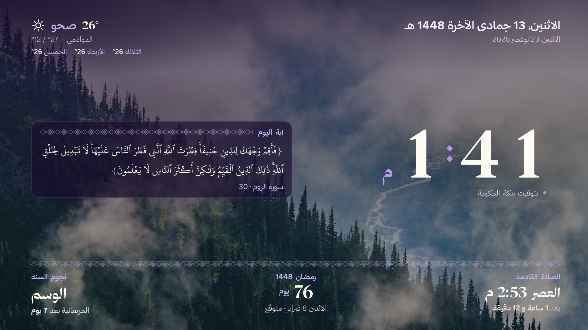

الرئيسية على مقاسك
تطبيقات مفضلة، بث حي صامت لقناة القرآن الكريم، وتوقيت الصلاة القادمة، مع اختيار المدينة من الشاشة.
حمّل AN TV واجعله الصفحة الرئيسية وشاشة التوقف. التحميل والشرح المصوّر والتحديث والرجوع كلها في هذه الصفحة.
الرابط يحمل أحدث إصدار تلقائيًا · ثبّت الملف على التلفزيون، وليس على الجوال.ابدأ من التلفزيون والريموت · نحو ٥–١٥ دقيقة بحسب الجهاز والتحميل.

افتح AN TV واضغط «جهّز AN TV»؛ يحاول الاتصال مباشرة.

وافق على رسالة التصحيح، ثم راجع الخطة واضغط «ابدأ التجهيز».

بعد نجاح التجهيز اختر المدينة، ثم «إنهاء وفتح الرئيسية». جرّب زر Home.
اضغط الصورة لتكبيرها. تشغيل التصحيح مطلوب أول مرة؛ افتح خيارات المطور إذا لم يكن مفعّلًا. اللقطات من التطبيق على محاكي Android 14.
نفس واي فاي التلفزيون ← افتح «الإعداد بالجوال» داخل AN TV ← امسح QR وأكمل. الموافقة على التصحيح تكون بالريموت.
لنقل الملف بدل Downloader: استخدم LocalSend إذا كان متاحًا على الجهازين.
نفس الشبكة ← أدوات Android Platform Tools ← اتصال ADB وتثبيت AN-TV.apk ← أكمل التجهيز من التلفزيون.
الأوامر والاقتران اللاسلكي في التفاصيل أدناه.
أعد تشغيل التلفزيون وجرّب التجهيز مجددًا. بعض الأجهزة تحتاج اقترانًا لاسلكيًا أو كمبيوترًا مرة واحدة. إذا ظهر «تطبيق ضار ومحظور»، أرسل صورة التحذير لفحص السبب؛ هذه المشكلة لم يُؤكد حلها بعد.
| الطريقة | المطلوب | الوقت التقريبي |
| التلفزيون وحده | ريموت، إنترنت، Downloader، وتصحيح متاح | 5–15 دقيقة |
| الجوال | أندرويد أو آيفون؛ نفس شبكة التلفزيون للتحكم المحلي | 10–20 دقيقة |
| الكمبيوتر | Windows أو Mac أو Linux، وأدوات ADB عند الحاجة | 10–25 دقيقة |
الأوقات تقديرية وقد تزيد عند تنزيل الملف أو حل مشكلة التصحيح. هذه تقديرات AN TV وليست قياسات لجميع الموديلات. تثبيت APK خطوة، وتفعيل الرئيسية وشاشة التوقف خطوة تالية.
1. افتح إعدادات التلفزيون ثم النظام أو تفضيلات الجهاز، ثم لمحة/حول.
2. اضغط على رقم الإصدار Build سبع مرات حتى تظهر خيارات المطور.
3. افتح خيارات المطور وفعّل تصحيح USB أو ADB. إذا كان الجهاز يعرض تصحيحًا لاسلكيًا برمز، استخدم مسار الاقتران بدل افتراض المنفذ 5555.
4. نزّل Downloader من متجر التلفزيون. اكتب الرمز 1982161 ثم Go. هذا رمز AN TV.
5. اسمح لـ Downloader بتثبيت التطبيقات عندما يطلب النظام ذلك، وثبّت AN TV ثم افتحه.
6. افتح AN TV واضغط «جهّز AN TV». إذا تعذر الاتصال افتح خيارات المطور أو خيارات الاقتران حسب جهازك.
7. اضغط «جهّز AN TV»، واقرأ الخطة، ثم «ابدأ التجهيز».
8. وافق على رسالة السماح بالتصحيح من AN TV Setup. يبقى المعالج مفتوحًا أثناء العمل.
9. يحفظ المعالج اختيار الرئيسية وشاشة التوقف ومدة الخمول السابقة، ثم يضبط AN TV ويتحقق من الاختيارين. هذه نسخة إعدادات رجوع، وليست نسخة كاملة لنظام التشغيل.
10. بعد النجاح اختر منطقتك ومدينتك، ثم «إنهاء وفتح الرئيسية».
11. اختبر زر Home، ومعاينة شاشة التوقف، ثم استمرار الواجهة بعد إعادة تشغيل الجهاز.
12. افتح إعدادات AN TV ← تنبيه الأذان، وامنح إذن الظهور فوق التطبيقات، واختر المؤذن وطريقة التنبيه، ثم اختبر المعاينة بالصوت.
إذا لم تظهر رسالة التصحيح، أعد تشغيل التلفزيون وافتح معالج الإعداد مرة أخرى. بعض الأجهزة لا تفتح ADB عبر الشبكة بمجرد تفعيل USB؛ تحتاج اقترانًا لاسلكيًا أو كمبيوترًا مرة واحدة. لا توجد طريقة مضمونة لكل الموديلات.
1. اتصل بالجوال والتلفزيون بنفس شبكة المنزل، دون شبكة ضيوف معزولة.
2. الأسهل تنزيل التطبيق بـ Downloader على التلفزيون. البديل: نزّل APK من صفحة AN TV، وانقله عبر LocalSend إذا كان متاحًا على الجهازين، ثم افتحه على التلفزيون وثبّته.
3. افتح معالج إعداد AN TV على التلفزيون واضغط «الإعداد بالجوال (اختياري)».
4. امسح QR وافتح الرابط المحلي، وأدخل رمز الإعداد الظاهر إن طُلب.
5. من الصفحة افتح خيارات المطور على التلفزيون، وفعّل التصحيح بالريموت. ارجع للمعالج وأدخل بيانات الاقتران فقط إذا كان جهازك يعرضها.
6. نفّذ التفعيل، ووافق على رسالة التصحيح بالريموت، ثم اختر المدينة وأنهِ الإعداد.
7. إذا تعذر فتح الرابط: أبقِ المعالج مفتوحًا، واسمح بالوصول للشبكة المحلية عند طلب المتصفح، وتأكد من عدم عزل الأجهزة في الراوتر. يمكنك إكمال كل الخطوات بالريموت.
التحكم المحلي لا يحتاج حسابًا أو اشتراكًا. يحتاج نفس الشبكة؛ نقل الصور خدمة مختلفة عن إعداد التثبيت.
على أندرويد يمكن استخدام Termux مع حزمة android-tools للاتصال بالجهاز. على الكمبيوتر تُستخدم Android Platform Tools. إذا ظهر اقتران لاسلكي:
adb pair TV_IP:PAIR_PORT
adb connect TV_IP:CONNECT_PORT
adb -s TV_IP:CONNECT_PORT tcpip 5555
اكتب رمز الاقتران عند طلبه، واستبدل القيم بما يعرضه التلفزيون. لا تفترض أن منفذ الاتصال يساوي منفذ الاقتران. بعدها جرّب «جهّز AN TV» بالريموت في وضع الاتصال المباشر. قد يُغلق 5555 بعد إعادة التشغيل.
على الآيفون، صفحة الإعداد المحلية هي مسارنا الأساسي. تشغيل ADB عبر iSH ليس مسارًا مختبرًا لدينا؛ عند تعذر الاتصال المحلي استخدم أندرويد أو كمبيوتر. لا يُطلب Codex أو اشتراك ذكاء اصطناعي.
1. وصّل الكمبيوتر والتلفزيون بنفس الشبكة وثبّت Android Platform Tools من موقع Android الرسمي.
2. نزّل AN-TV.apk من صفحة تحميلنا. فعّل تصحيح التلفزيون.
3. للاتصال المباشر نفّذ adb connect TV_IP:5555 ووافق على رسالة التلفزيون. للتصحيح اللاسلكي نفّذ أوامر الاقتران الموضحة أعلاه.
4. ثبّت الملف: adb -s TV_IP:PORT install -r AN-TV.apk.
5. افتح AN TV من التلفزيون، وأكمل معالج التجهيز واختيار المدينة. إذا احتاج الاتصال المحلي 5555، نفّذ adb -s TV_IP:PORT tcpip 5555 قبل العودة للمعالج.
6. راجع النتيجة بزر Home ومعاينة شاشة التوقف. لا تشغّل سكربتات UrTV القديمة على AN TV؛ قد تستبدل تطبيقاتنا أو إعداداتنا.
يحفظ معالجنا الرئيسية وشاشة التوقف وتفعيلها ومدة الخمول السابقة. يعيّن AN TV واجهة رئيسية وشاشة توقف، ويمنح الإعدادات اللازمة التي يسمح بها ADB. لا يستبدل Android أو يثبت نظام تشغيل جديدًا، ولا يحذف برامجك، ولا يطبق تنظيف UrTV أو تنزيل متصفح وSmartTube.
1. افتح إعداد AN TV؛ يمكن الوصول إليه بالضغط المطول على زر الإعدادات في الرئيسية.
2. فعّل التصحيح مجددًا عند الحاجة، واضغط «استعادة الواجهة السابقة».
3. انتظر تأكيد النجاح، واختبر زر Home.
4. للإزالة استخدم «استعادة الواجهة ثم حذف AN TV»؛ تظهر موافقة الحذف بعد نجاح الاستعادة.
5. لا تحذف التطبيق قبل الاستعادة إن كنت تريد استخدام نسخة إعدادات الرجوع المحفوظة داخله.
إعدادات AN TV ← تحديث AN TV. التحديث من حزمة المشروع الموقعة نفسها يحافظ عادة على الإعدادات. التثبيت يحتاج موافقة النظام؛ لا نعد بتثبيت صامت على جميع الأجهزة.
- «تطبيق ضار ومحظور»: توقف التثبيت قبل المعالج. أرسل نص التحذير وإصدار الحزمة للفحص ومراجعة تصنيف الحماية. المعالج لا يستطيع إزالة هذا الحظر.
- «لا توجد أرقام»: اختر الاتصال المباشر فقط إذا كان ADB متاحًا؛ تفعيل USB لا يضمن فتح منفذ الشبكة.
- «تعذر الاتصال»: تحقق من الشبكة وتفويض التصحيح والمنفذ. جرّب الريموت بدل صفحة الجوال.
- «تعذر حفظ الواجهة السابقة»: لا يكمل المعالج تغيير الرئيسية دون إعداد رجوع صالح. لا تعتبر العملية ناجحة.
- «البرنامج يفتح كتطبيق»: لم يكتمل تعيين الرئيسية؛ أكمل التفعيل وتحقق بزر Home.
- «الأذان لا يظهر»: افتح تنبيه الأذان، فعّل التنبيه وإذن الظهور والمعاينة. راجع المدينة والتوقيت.
طمأنينة هو مدخل التلاوات. اختيار مؤذن تنبيه الصلاة في إعدادات AN TV ← تنبيه الأذان. القائمة الحالية تتضمن عبدالعزيز بن ماجد وأسماء مختارة من مؤذني مكة والمدينة. أسماء القراء في مشغل القرآن ليست قائمة مؤذنين. مصادر التسجيلات موثقة في شاشة مصادر أصوات المؤذنين؛ توجد تسجيلات من Archive.org. لا ننسب تسجيلًا مجهول المؤذن لاسم شيخ.
مبدأ ADB المحلي والتجهيز من التلفزيون مستلهم من توثيق UrTV، مع معالج AN TV وتغييراتنا. إشعارات ترخيص المكونات محفوظة. لا تستخدم رمز تحميل UrTV لتثبيت AN TV.


واجهة رئيسية وشاشة توقف عربية مصممة للريموت، بخط ثمانية ولمسات السدو والزجاج الخزامي.
تطبيقات مفضلة، بث حي صامت لقناة القرآن الكريم، وتوقيت الصلاة القادمة، مع اختيار المدينة من الشاشة.
ساعة وتاريخ هجري وميلادي، الطقس، المناسبة القادمة، نجوم السنة، وآية أو حديث يتبدلان يوميًا.
شريط زجاجي فوق التطبيقات عند الصلاة إذا سمح الجهاز بالظهور فوقها. اختر مؤذنًا، أذانًا كاملًا أو مقطعًا قصيرًا أو تنبيهًا صامتًا، واضبط المدة ووضوح الصوت وجرّب المعاينة من الإعدادات.
٢٢ خلفية محفوظة تعمل دون إنترنت، وصور جديدة عند الاتصال، مع اسم المصور. يتيح التطبيق تحديث نفسه واستعادة اختيار الواجهة السابقة.
تجد هذه القائمة أيضًا داخل التلفزيون: إعدادات AN TV ← مصادر AN TV. ولرابط كل صورة على حدة: صور AN TV.
خدمة تقويم أم القرى الرسمية عبر مدينة الملك عبدالعزيز للعلوم والتقنية؛ حساب محلي عند انقطاع الاتصال.
تواريخ المناسبات وجدول النجوم من موقع دُنُوّ. تُحفظ نسخة للعمل دون إنترنت.
نص القرآن و«التفسير الميسر» عبر api.alquran.cloud؛ آيات مختارة محفوظة داخل التطبيق مع اسم السورة ورقم الآية.
مجموعة أحاديث موثقة من الكتب الستة باستخدام Hadith API؛ يظهر مصدر الحديث معه.
الطقس الحالي وتوقعات الأيام والساعات من البيانات العامة على موقع المركز الوطني للأرصاد، وتتحدث عند الاتصال. عند عدم توفر المدينة ضمن تقرير المركز، يستخدم التطبيق توقع النقطة الأقرب لإحداثياتها من المركز نفسه. بعض التوقعات تعتمد على نماذج عددية.
١٨ صورة طبيعة محفوظة من Google Chromecast، وصور طبيعة وحيوانات متجددة من Wikimedia Commons. تجد اسم المصور ورابط كل صورة محفوظة أو حالية في إعدادات صور AN TV.
معاينة قناة القرآن الكريم السعودية، وفتح بثها المباشر عند الاختيار. التلاوات من mp3quran.net وتسجيلات الأذان من Archive.org ومصادرها الموثقة.
قائمة مناطق ومدن سعودية داخل التطبيق؛ البحث الإضافي يستخدم Open-Meteo Geocoding.
بعد نجاح التفعيل يفتح زر الرئيسية واجهة AN TV، وتظهر شاشة توقفه عند الخمول. تثبيت APK وحده يضعه ضمن التطبيقات فقط؛ أكمل خطوة «تفعيل AN TV».
يعمل AN TV فوق Android TV أو Google TV ويستخدم تطبيقاته وإعداداته. يحفظ المعالج اختيار الواجهة وشاشة التوقف السابقين لاستعادتهما عند الإزالة. لا ينشئ نسخة كاملة من نظام الشركة.
تعمل هذه الحزمة على Android TV وGoogle TV. بعض الأجهزة تمنع تغيير الواجهة؛ لا يوجد ملف واحد يبدّل نظام كل تلفزيون.
يفحص AN TV وجود إصدار جديد مرة كل يوم عند فتح الرئيسية. للفحص فورًا: «إعدادات AN TV ← تحديث AN TV». وافق على تثبيت أندرويد إذا طلب ذلك. تبقى إعدادات AN TV بعد التحديث.
من معالج AN TV اختر «استعادة الواجهة السابقة» قبل إزالة التطبيق. تعود الرئيسية وشاشة التوقف المحفوظتان، ثم يمكنك حذف AN TV من إعدادات التطبيقات.